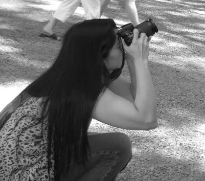

Fotografía Natural
Por Fabiana Aguirre
Sobre mi/Mi trabajo
- 
-
Nacida en Buenos Aires, soy fotógrafa de naturaleza. Mis pasiones son mi familia, los viajes y la naturaleza. Mi interés en la fotografía se dio a partir del nacimiento de mi primer hijo, para inmortalizar sus primeros momentos. A medida que fue creciendo, mi interés por la fotografía aumentó al punto de empezar mi primer curso de fotografía analógica, y comprar mi primera cámara. A este lo siguieron varios cursos más: fotografía digital, Photoshop, iluminación, lightroom, fotografía artística de retrato, fotos de autor, en conjunto con múltiples exposiciones, muestras fotográficas y publicaciones en revistas de divulgación científica y para distintas páginas web. En el 2012, me uní a una salida de observación de aves en los lagos de Palermo, donde conocí a varios fotógrafos de aves. Luego me invitaron a ser parte del club y comencé a fotografiar aves. A partir de esta nueva actividad comencé a hacer salidas a campos y reservas naturales. Recorriendo varias provincias de mi país pude fotografiar la fauna y flora única de cada lugar y en conjunto las escenas naturales que ofrecen los distintos lugares.